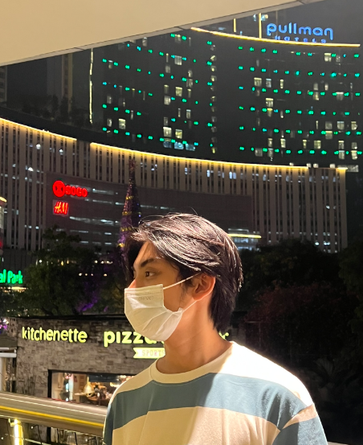

About Me
Welcome to my profile! I'm a dedicated individual currently pursuing a degree in computer science at Sam Ratulangi University. My passion lies at the intersection of technology and creativity, with a particular focus on 3D art, UI/UX design, and front-end development.
Besides my academic pursuits, I find immense joy in exploring various forms of entertainment. Whether it's immersing myself in the captivating narratives of video games, delving into the immersive world of films, or discovering new musical genres, I'm always eager to broaden my horizons.
In both my personal and professional endeavors, I value attention to detail, organization, and seeing tasks through to completion. I believe in the importance of delivering high-quality work that reflects my commitment to excellence.
As I continue to grow in this dynamic field, I embrace challenges as opportunities for learning and improvement. Whether it's refining my existing skills or venturing into new territories, I approach each endeavor with enthusiasm and determination.
Thank you for visiting, and I look forward to embarking on this journey together!